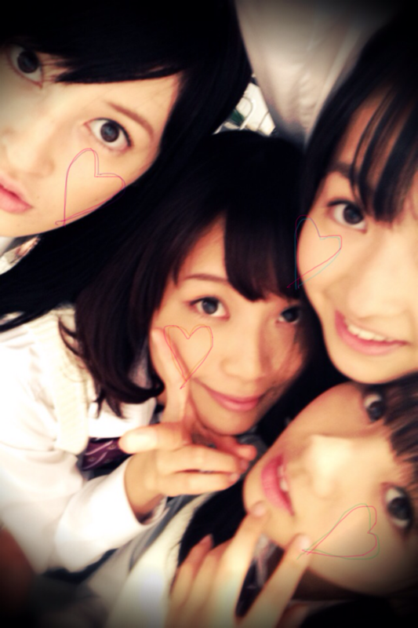

お久しぶりに......ベビたんです。まりかです。
こんにちわ!!こんばんわ!!
いつも読んでくださる方、
初めてコメントくださった方、
ありがとうございます♡
みなさんのコメントを読んでいて
毎日ほかほかなベビたんです。
外もめちゃくちゃ寒くなりましたね!
風邪ひかないでね。
私は大丈夫です*!!
首元は開けないようにね!
マフラーしなきゃね!
昨日の乃木坂って、どこ？で
私の私服映りました。
点数は75点ていうね.......
そっく!!(ショックの最大級）←
気合い入れすぎました笑
とっても個性的になってしもた。
これじゃ自分でおしゃれ番長て言えない〜!!
でもこのBloGでちょっとずつでも
私服見せれたらいいなって
思います☆
負けないぜっ!
かくれおしゃれ番長になってみせるぜっ‼←
あと、昨日久しぶりに
全員集まって撮影しました＊
めっちゃ楽しかった------------♪
で、ねねころがね~
名古屋行ってたときずっと
まりかに会いたいって
言ってたんだって!!っきゃ
すぐ抱きついてきたね。
もう私きゅん死だね。
昨日はメンバーといっっっぱい
はしゃいでたー!!の話
最近かずみんのまね流行ってるの。
昨日な-ちゃんに教わった!!
みんなうまいのよ~^^
かずみんはみなみのまね上手!
さゆにゃんがお弁当食べてるときに
ろってぃと私がちょっかい出してたら
さゆにゃんが笑いながらおこってるの!にしし
ろってぃとみさみさと
写メではしゃいだ。
ちはるんとはしゃいだ。爆笑した…
まいまいとななみんとさゆりんに
またあごの下こしょこしょされた。
いつもこしょこしょするの〜!
ゆったんがみんなのおしりさわってた笑
みゅうみゅうにまた幼くなったって言われた!

せっちゃん、まいまい、あみ
他にも載せたい写真いっぱいあるなぁ.....
楽しいな〜♪
みんな本当に仲良しなのよね*
のぎメンみ---んなだいすき------♡
30日もうすぐですね!
イベント当たった方に会うの楽しみです☆*
外れてしまった方、次会いましょうね>
私はみなさんに早く会いたくてうずうずしてます~。
もし直接お話できる機会があったら...
そうですね、投げキッスは........
可能です!!きゃ-----←
全部質問返しをすると
長くなりそうなので
またまとめてお返ししますね^^*
あっ。ちょっと前髪切りました＊
分かる??
テストがんばんなきゃ-------------!!!!!!!!!!
ベビたん*****bA by marika